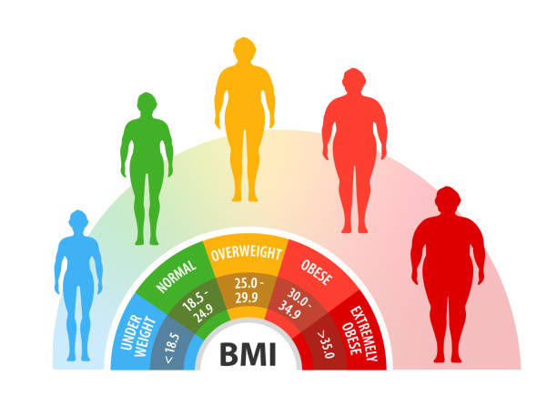

Height (in cm)
Weight (in kg)
Body mass index, or BMI, is a measure of body size. It combines a person's weight with their height. The results of a BMI measurement can give an idea about whether a person has the correct weight for their height.
BMI is a screening tool that can indicate whether a person is underweight or if they have a healthy weight, excess weight, or obesity. If a person's BMI is outside of the healthy range, their health risks may increase significantly.
Carrying too much weight can lead toTrusted Source a variety of health conditions, such as type 2 diabetes, high blood pressure, and cardiovascular problems.
A weigh that is too low can increase the risk of malnutrition, osteoporosis, and anemia. The doctor will make suitable recommendations.
BMI does not measure body fat directly, and it does not account for age, sex, ethnicity, or muscle mass in adults.
However, it uses standard weight status categories that can help doctors to track weight status across populations and identify potential issues in individuals.

A BMI of less than 18.5 indicates that you are underweight, so you may need to put on some weight. You are recommended to ask your doctor or a dietitian for advice.
A BMI of 18.5-24.9 indicates that you are at a healthy weight for your height. By maintaining a healthy weight, you lower your risk of developing serious health problems.
A BMI of 25-29.9 indicates that you are slightly overweight. You may be advised to lose some weight for health reasons. You are recommended to talk to your doctor or a dietitian for advice.
A BMI of over 30 indicates that you are heavily overweight. Your health may be at risk if you do not lose weight. You are recommended to talk to your doctor or a dietitian for advice.
In adults, BMI values are not linked to age and are the same for both genders.
However, measuring BMI in children and teens is slightly different. Girls and boys develop at different rates and have different amounts of body fat at different ages.
For this reason, BMI measurements during childhood and adolescence take age and gender into consideration.
Doctors and other health professionals do not categorize children by healthy weight ranges because:
-They change with each month of age
-Male and female body types change at different rates
-They change as the child grows taller
Doctors calculate BMI for children and teens in the same way as they do for adults, by measuring height and weight. Then they locate the BMI number and person's age on a gender-specific BMI-for-age chart. This will indicate whether the child is within a healthy range.